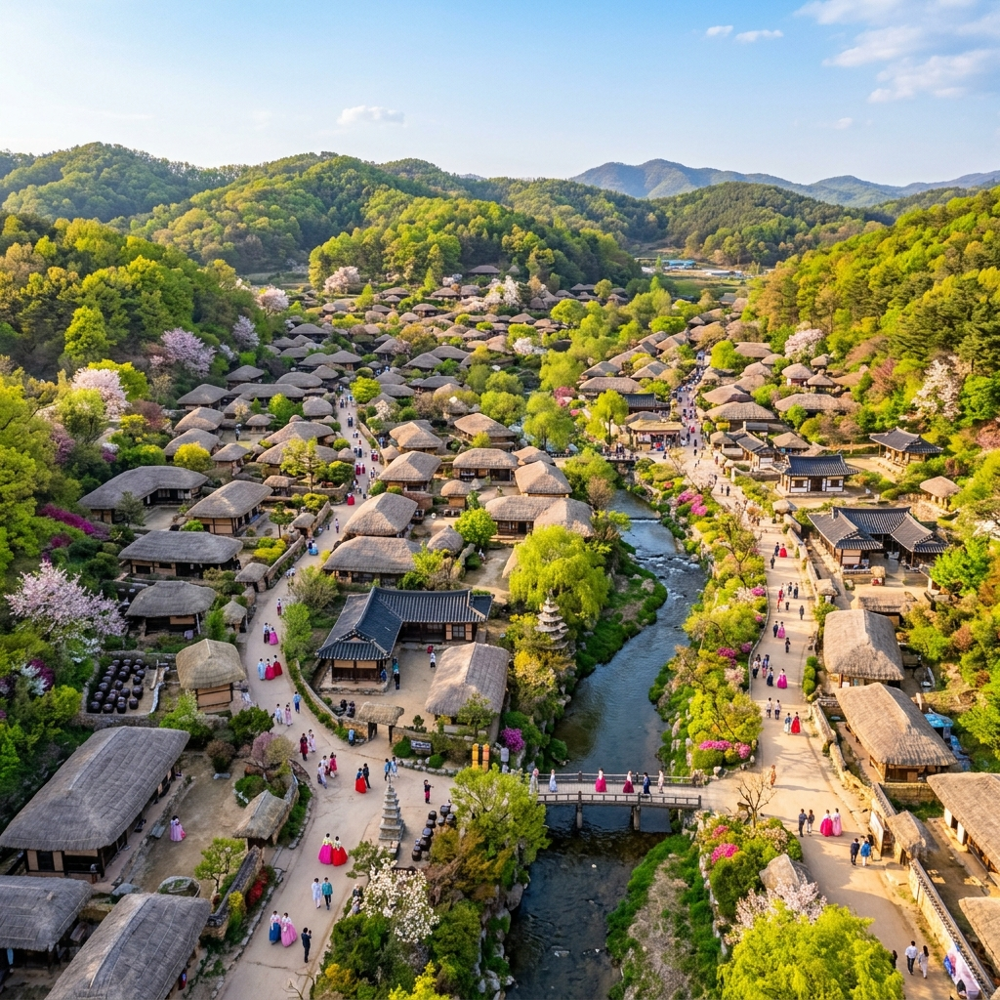
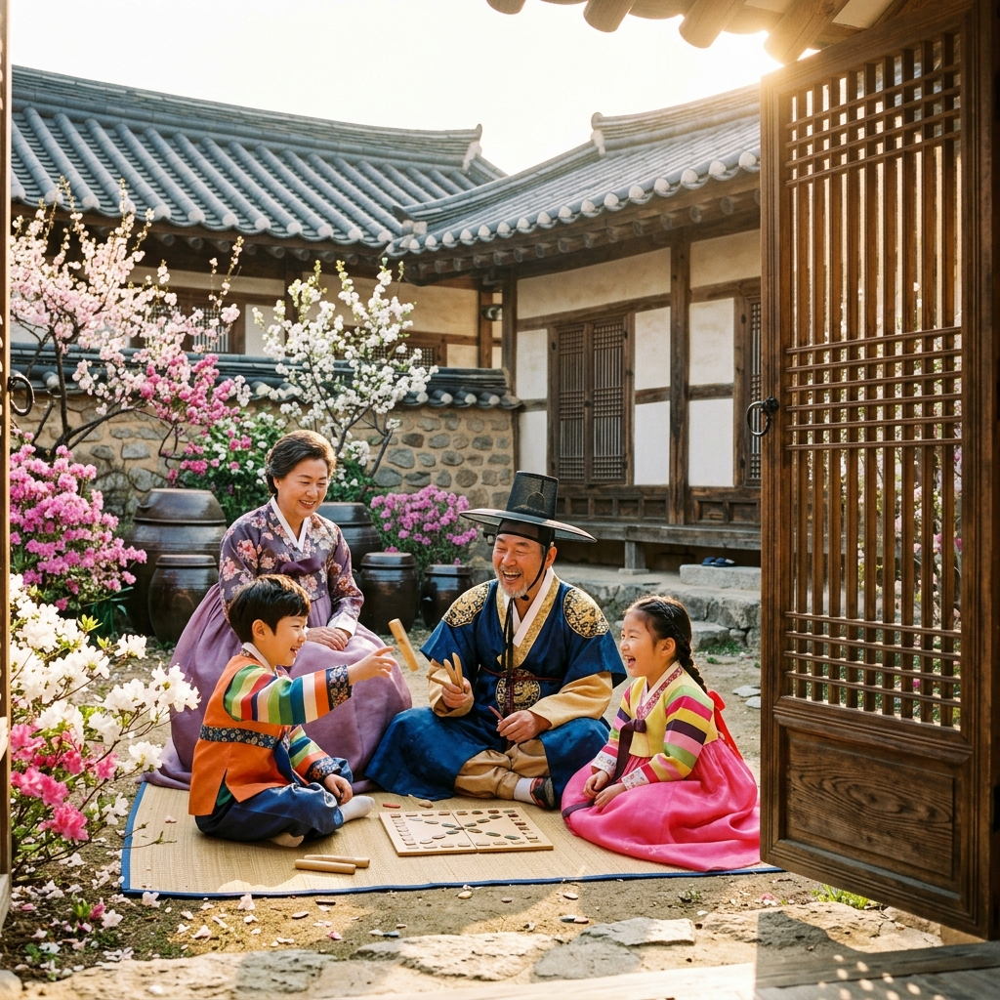
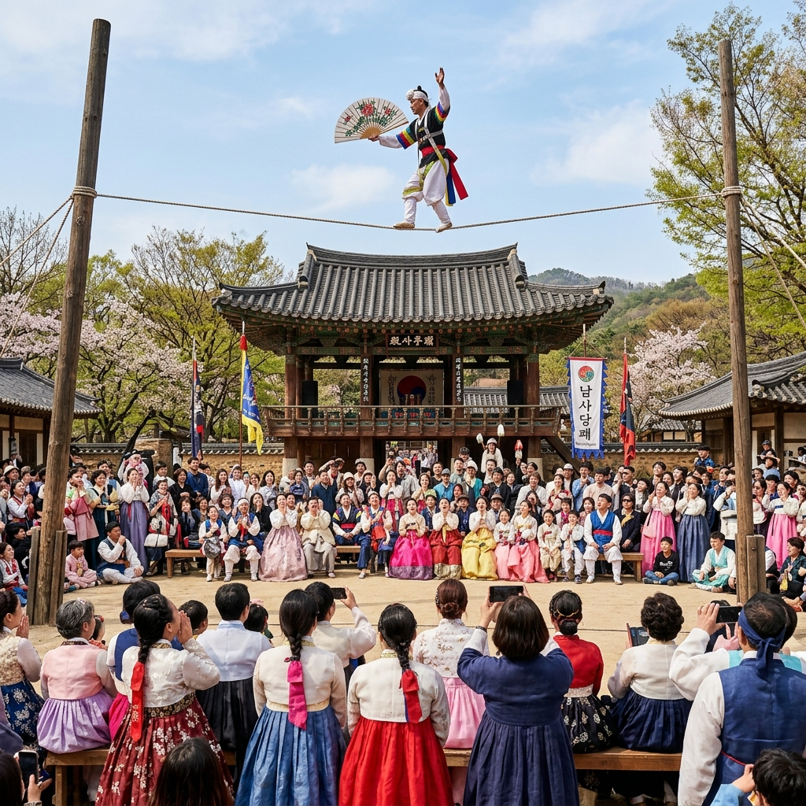

용인 한국민속촌 5월 가정의 달 2026: 단오 전통 체험 & 한복 대여 가족 코스 완벽 가이드
5월 가정의 달, 아이와 함께 조선 시대로 시간 여행을 떠나는 것은 어떨까요? 용인 한국민속촌은 약 30만 평의 드넓은 부지에 조선 시대 마을을 실물 그대로 재현한 국내 최대 규모의 민속 테마 공간입니다. 한복을 입고 옛 거리를 걸으며 전통 공연을 감상하고, 직접 전통 음식을 맛보는 경험은 아이들에게는 살아있는 역사 교육이자, 어른들에게는 깊은 감동과 힐링을 선사합니다. 2026년 5월, 가정의 달 특별 프로그램과 함께하는 한국민속촌 완벽 가이드를 지금 확인해 보세요.
| 항목 | 내용 |
|---|
| 위치 | 경기도 용인시 기흥구 민속촌로 90 |
| 운영 시간 | 09:30~18:00 (주말·공휴일 ~19:00, 시즌별 변동) |
| 입장료 | 성인 25,000원, 청소년 20,000원, 어린이 18,000원 |
| 교통 | 수원역/사당역 버스 환승 or 자가용 (전용 주차장 완비) |
| 주차 | 대형 무료 주차장 운영 (1,000대 이상) |
🏘️ 1. 한국민속촌, 5월에 가장 아름다운 이유
경기도 용인시에 자리한 한국민속촌은 1974년 개장 이후 50년의 역사를 자랑하는 대한민국 대표 전통문화 테마파크입니다. 실제 조선 시대 양반 가옥, 초가집, 서당, 관아, 대장간, 한약방 등을 원형에 가깝게 복원해 놓은 이곳은 단순한 전시 시설이 아닌, 살아 숨쉬는 '전통 생활 마을'입니다. 총 250여 채의 전통 가옥과 가마, 농기구 등이 실제로 사용하던 방식 그대로 배치되어 있어, 방문객들은 마치 수백 년 전 조선의 어느 마을을 거니는 듯한 묘한 감각에 빠져들게 됩니다.
5월은 한국민속촌을 방문하기에 단연 최고의 시기입니다. 민속촌 곳곳에 심어진 수백 그루의 벚꽃, 라일락, 철쭉이 연이어 개화하는 4월 말에서 5월 초의 풍경은 고즈넉한 초가지붕과 어우러져 그림 같은 배경을 만들어냅니다. 초록빛 신록이 돋아나는 5월 중순 이후에는 한복 차림으로 골목을 걷는 모습이 자연과 전통이 하나 되는 한 폭의 수묵화처럼 연출됩니다. 또한, 5월 가정의 달을 맞아 가족 대상 특별 할인권과 가족 체험 패키지가 별도로 운영되므로 사전에 홈페이지를 반드시 확인하세요.
민속촌의 또 다른 강점은 사계절 내내 진행되는 다양한 전통 공연과 체험 프로그램입니다. 2026년 현재 한국민속촌에서는 매일 농악 공연, 마상 무예 시연, 줄타기 공연, 씨름 경기 등을 정기적으로 운영하고 있으며, 가정의 달인 5월에는 이러한 프로그램의 횟수와 규모가 대폭 확대됩니다.

[용인 한국민속촌 전경] / AI 생성 이미지
🎟️ 2. 2026년 5월 입장료 & 가족 할인 총정리
한국민속촌의 입장료는 어린이날과 가정의 달 기간에 다양한 할인 혜택이 적용됩니다. 일반 성인 기준 약 25,000원의 입장료가 책정되어 있지만, 가족 패키지나 온라인 사전 구매를 활용하면 최대 20~30% 저렴하게 입장할 수 있습니다.
2026년 5월 한국민속촌의 대표적인 할인 혜택은 다음과 같습니다. 가족 패키지(성인 2명+어린이 2명 기준)는 개별 구매 대비 약 15% 할인이 적용됩니다. 통신사 할인(KT/SK/LG U+)은 인원당 2,000~4,000원 추가 할인되며, 네이버 예약을 통한 사전 구매 시 5~10% 추가 할인이 가능합니다. 36개월 미만 영아는 무료 입장이 가능하며, 국가유공자·장애인·경로우대(65세 이상) 대상 감면 혜택도 별도로 운영됩니다.
입장 시 주의할 점은, 한복 대여 비용이 입장료에 포함되어 있지 않다는 것입니다. 민속촌 내 여러 곳에 운영되는 한복 대여 부스에서 한복을 빌릴 경우 약 10,000~20,000원의 추가 비용이 발생합니다. 그러나 한복을 착용하고 전통 가옥을 배경으로 찍는 사진은 한국민속촌 방문의 핵심이므로, 이 비용만큼은 '필수 지출'로 예산에 포함시키시기를 강력히 권해드립니다.
🥁 3. 단오 전통 체험 프로그램 완전 분석
음력 5월 5일 단오(端午)는 설날, 추석과 함께 우리나라 3대 명절 중 하나입니다. 한국민속촌은 5월 가정의 달을 맞아 단오의 전통 문화를 재현하는 다양한 체험 행사를 대대적으로 운영합니다. 아이들에게 단순히 '재미있는 놀이터'가 아닌 살아있는 전통 교육의 장을 제공한다는 점에서, 5월 한국민속촌 방문은 교육적 가치가 특히 높은 여행입니다.
단오 체험의 꽃은 역시 그네뛰기와 씨름입니다. 민속촌 내 잔디 마당에 설치된 전통 그네는 긴 옷을 입고 하늘 높이 오르며 힘껏 발로 차올리는 기쁨을 아이들에게 선사합니다. 씨름은 기름 먹인 흙 위에서 진행되는 전통 방식으로, 체험 참가 아이들은 모래 바닥 위에서 씨름 기술을 배우고 직접 겨루어 볼 수 있습니다. 이기는 팀에게는 전통 쌀강정이나 수박 등 현물 경품이 주어지는 경우도 많아 아이들의 경쟁심을 자극합니다.
그 외에도 창포물 머리 감기 체험, 단오 부적 만들기, 수리취떡 빚기 체험, 전통 팽이 돌리기, 투호 & 윷놀이 등 다양한 세부 프로그램이 운영됩니다. 대부분의 체험은 별도 신청 없이 자유롭게 참가할 수 있으나, 일부 인기 프로그램(예: 전통 도자기 만들기, 한지 공예)은 현장 접수 인원이 제한되므로 입장 직후 빠르게 신청해두시는 것이 좋습니다.
👘 4. 한복 대여 & 포토 스팟 완벽 가이드
한국민속촌 방문에서 한복 착용은 선택이 아닌 필수에 가깝습니다. 형형색색의 전통 한복을 입고 수백 년 된 초가집과 기와집 사이를 거니는 모습은 어느 여행지에서도 쉽게 경험하기 어려운 특별한 미적 체험입니다. 민속촌 내 한복 대여 부스는 총 4~5곳에 분산 운영되며, 규모가 큰 부스에서는 아동부터 성인, 노년층까지 모든 연령대에 맞는 다양한 한복을 보유하고 있습니다.
한복 착용 후 포토 스팟으로 가장 인기 있는 곳은 양반 가옥 사랑채 마당입니다. 높다란 기와담장과 정갈한 마당을 배경으로 찍는 한복 인물 사진은 드라마 세트장 못지않은 비주얼을 자랑합니다. 두 번째는 초가집 마을 골목으로, 구불구불한 흙길과 허름한 돌담 사이에서 찍는 사진은 필름 감성으로 가득한 레트로 무드를 연출합니다.
세 번째 포토 스팟은 연못가 정자입니다. 수면에 반사되는 전통 정자와 한복 착용자의 모습은 특히 맑은 날씨에 최고의 인생샷을 보장합니다. 네 번째는 오월 신록이 우거진 솔밭길로, 햇빛이 소나무 가지 사이로 빛살처럼 쏟아지는 오전 10~11시경의 빛 조건이 사진 촬영에 최적입니다. 스마트폰 카메라로도 전문가급 사진을 찍을 수 있는 구도가 이미 자연적으로 완성된 공간들이니, 충분히 시간을 내어 다양한 앵글을 시도해보세요.

[한국민속촌 한복 체험] / AI 생성 이미지
🎭 5. 전통 공연 일정 & 관람 명당
한국민속촌에서 놓치면 절대 안 되는 콘텐츠가 바로 전통 공연입니다. 민속촌은 매일 정기적으로 농악대 공연, 마상 무예 시연, 줄타기, 솟대 오르기, 살판(텀블링), 씨름 경기 등을 야외 공연장에서 선보이며, 특히 가정의 달인 5월에는 공연 횟수를 평소 대비 약 50% 이상 늘려 하루 5~6회까지 진행합니다.
공연 중 가장 인기 있는 것은 마상 무예 시연입니다. 말을 달리며 활을 쏘거나 창을 휘두르는 무예 시연은 아이들에게는 물론, 어른들에게도 입을 다물지 못하게 만드는 스펙터클입니다. 공연 시간은 대략 20~30분 내외이며, 오전 11시와 오후 2시경에 주로 진행됩니다. 관람 명당은 공연장 정면 중앙에서 약간 비스듬한 자리로, 말이 달리는 방향과 무예인의 정면 모습을 동시에 포착할 수 있어 사진 촬영에도 최적입니다.
줄타기 공연은 유네스코 무형문화유산으로 등재된 한국 전통 줄타기의 정수를 보여주는 공연으로, 10m 높이의 줄 위에서 재담꾼과 주고받는 익살스러운 대화와 함께 펼쳐지는 아슬아슬한 줄타기 묘기는 연령 불문 최고의 인기를 자랑합니다. 어린 자녀를 동반한 가족이라면 공연 시작 최소 10분 전에 자리를 잡아 앞쪽 공간을 확보하시기 바랍니다. 공연 종료 후에는 공연자와 함께 사진을 찍을 수 있는 기회가 제공되기도 하니 놓치지 마세요.
🍚 6. 조선 시대 먹거리: 민속 음식 완벽 가이드
한국민속촌 방문에서 빼놓을 수 없는 또 하나의 즐거움은 바로 전통 음식 체험입니다. 민속촌 내 전통 음식 거리에는 조선 시대 방식으로 조리한 다양한 전통 음식이 즐비하며, 현대에는 쉽게 접하기 어려운 음식들을 맛볼 수 있는 귀한 기회이기도 합니다.
가장 인기 있는 메뉴는 닭볶음탕 정식입니다. 가마솥에 장시간 끓여낸 진한 국물의 닭볶음탕은 민속촌을 찾은 많은 방문객들이 '꼭 먹어봐야 할 음식' 1위로 꼽는 메뉴로, 1인분 약 12,000~15,000원에 제공됩니다. 두 번째로 인기 있는 메뉴는 전통 비빔밥으로, 나물과 고추장을 고루 섞어 먹는 한 그릇 식사는 간단하면서도 든든합니다. 어린아이들이 좋아하는 메뉴로는 수리취떡, 호떡, 전통 식혜, 쑥 인절미 등 달콤하고 쫄깃한 전통 간식들이 있습니다.
민속촌 내 대표 식당인 한식당 민속마루와 전통 음식 마당은 점심 시간대(오전 11시 30분~오후 1시)에 줄이 길어지므로, 가급적 오전 11시 이전에 먼저 음식을 주문해 두거나, 오후 1시 30분 이후 식사 시간을 조정하시기 바랍니다. 또한, 바깥에서 가져온 음식을 먹을 수 있는 피크닉 구역도 별도 운영되고 있으니 도시락 지참도 가능합니다.

[한국민속촌 줄타기 공연] / AI 생성 이미지
🧒 7. 어린이 체험 프로그램 TOP 5
5월 가정의 달, 한국민속촌은 어린이들을 위한 특별 체험 프로그램을 집중적으로 운영합니다. 단순히 구경하는 여행이 아닌 직접 만지고 느끼는 체험형 여행을 원하는 가족들에게 한국민속촌은 최고의 선택지입니다.
1위: 전통 도자기 만들기 — 물레를 직접 발로 돌리며 흙을 손으로 빚어 컵이나 그릇 모양을 만들어보는 체험입니다. 어른의 도움이 필요하지만, 완성된 작품을 구워 택배로 받아볼 수 있어 여행의 소중한 기념품이 됩니다. 2위: 한지 부채 만들기 — 전통 한지를 활용해 손잡이를 직접 붙이고, 전통 무늬 도장으로 꾸미는 체험입니다. 완성된 한지 부채는 5월 더워지는 날씨에 실용적인 기념품으로도 훌륭합니다.
3위: 활쏘기 체험 — 조선 시대 무사가 된 기분으로 전통 활을 당겨 과녁을 맞히는 체험입니다. 강사가 1대 1로 자세를 교정해주며, 과녁을 맞힌 아이에게는 소정의 선물이 주어집니다. 4위: 전통 팽이 & 딱지치기 — 별도 신청 없이 자유롭게 즐길 수 있는 야외 전통 놀이 코너로, 요즘 아이들에게는 생소하지만 한 번 시작하면 한 시간도 훌쩍 지나버립니다. 5위: 전통 연 만들기 — 대나무 뼈대와 한지를 활용해 전통 연을 직접 제작하고, 넓은 잔디 광장에서 날려보는 체험입니다. 봄바람이 부는 5월에는 연날리기의 최적 조건이 갖춰집니다.
🚗 8. 주차 & 교통 가이드
한국민속촌은 경기도 용인시에 위치해 대중교통 접근성이 서울 도심 공원들에 비해 다소 불편한 편입니다. 그러나 대형 무료 주차장(1,000대 이상 수용)을 완비하고 있어, 자가용 방문이 가장 편리하고 일반적인 방법입니다.
자가용으로는 영동고속도로(수원 IC) → 용인 방면 → 민속촌로 진입이 일반적인 경로이며, 내비게이션에 '한국민속촌'을 검색하면 쉽게 찾아오실 수 있습니다. 어린이날 연휴에도 대형 주차장 덕분에 주차 자체는 큰 문제가 없으나, 주차장 입구 진입 시 약 20~30분의 차량 정체가 발생할 수 있습니다.
대중교통 이용 시에는 수원역 또는 사당역에서 한국민속촌 방면 직행버스를 이용하시면 됩니다. 수원역 2번 출구에서 37번 버스 탑승 후 약 30분이면 민속촌 정류장에 도착합니다. 사당역에서는 시외버스 이용이 가능하며 소요 시간은 약 40~50분입니다. 어린이날 당일에는 방문객 폭증으로 버스 배차 간격이 늘어날 수 있으니, 출발 시간에 여유를 두시기 바랍니다.
📝 9. 가정의 달 현명한 방문 팁 & 체크리스트
한국민속촌을 가정의 달 최고의 여행지로 만들기 위한 실전 팁을 정리해 드립니다. 출발 전 이 체크리스트를 한 번 더 확인하고 완벽하게 준비하세요.
① 입장권 온라인 사전 구매: 현장 줄 없이 바로 입장, 할인 혜택도 챙기세요.
② 한복 대여 예산 별도 책정: 1인 10,000~20,000원 추가 비용이 발생합니다.
③ 오전 10시 이전 도착: 인기 체험 프로그램 선착순 접수를 놓치지 않으려면 일찍 오세요.
④ 공연 시간표 사전 확인: 관심 있는 공연에 맞춰 동선을 짜세요.
⑤ 편한 신발 필수: 민속촌 전체를 걸으면 약 1만 보 이상 걷습니다.
⑥ 자외선 차단제 & 챙 있는 모자: 5월 야외는 햇빛이 상당히 강합니다.
⑦ 아이 체험 선택권 존중: 너무 많은 체험을 무리하게 진행하면 아이가 지쳐 버립니다.
⑧ 현금 소액 준비: 일부 먹거리 상점이나 체험 부스가 현금만 받는 경우가 있습니다.
⑨ 사진 촬영 타임 활용: 오전 10~11시가 자연광이 가장 아름답습니다.
⑩ 귀갓길 기념품 쇼핑: 출구 근처 기념품 상점에서 전통 공예품·간식 구입이 가능합니다.
한국민속촌은 단순한 '구경'의 공간을 훨씬 뛰어넘어, 우리 전통 문화의 깊이와 아름다움을 온몸으로 체험하게 해주는 살아있는 역사 박물관입니다. 5월 가정의 달, 온 가족이 함께 조선의 골목을 거닐며 만들어가는 특별한 추억, 지금 바로 계획을 세워 보세요!
#한국민속촌
#용인한국민속촌
#가정의달여행
#단오체험
#한복대여
#5월가볼만한곳
#어린이날가족여행
#전통문화체험
#용인가족여행
#수도권당일치기